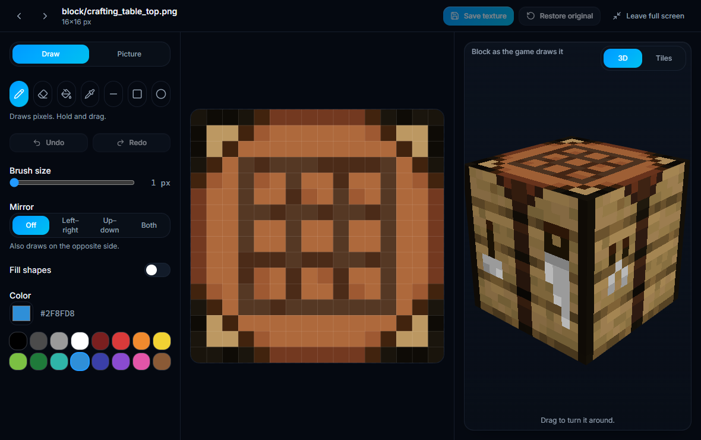
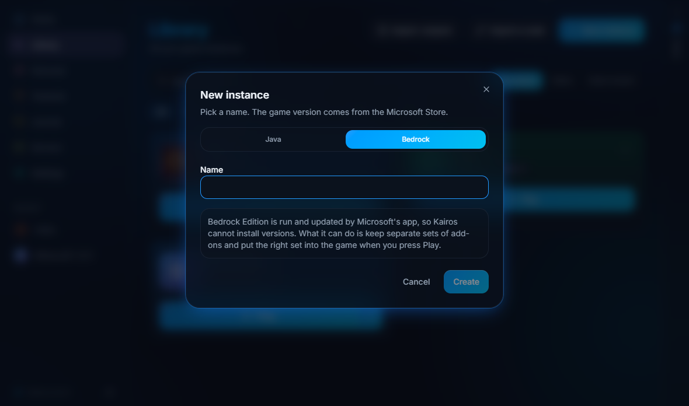
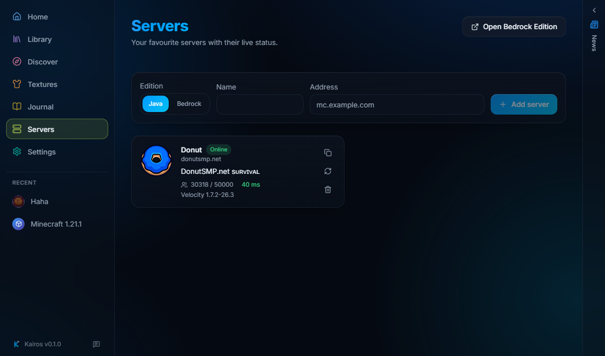
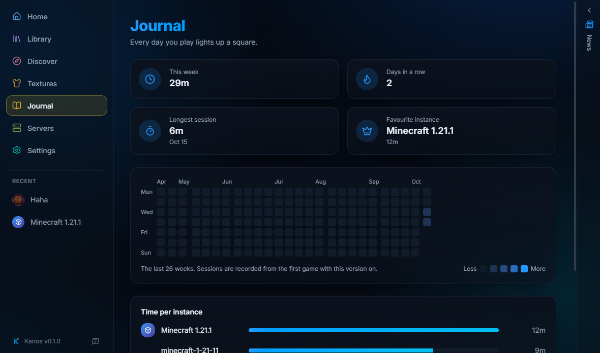

A launcher that feels alive
An independent, open source launcher for Minecraft. Java and Bedrock instances, your skin in 3D, mods, modpacks and your own textures in one place.
Download for WindowsSkins and textures
Paint skins on a flat texture or straight on a 3D model, and redraw any texture of the game.
Mods without the chores
Fabric, Quilt, Forge and NeoForge, dependency-aware installs and automatic mod updates.
Helps when it breaks
Crash analysis explains what went wrong, and one click saves a report with no personal data.
Yours to arrange
Choose where everything is stored, pick colors and backgrounds, English and Polish.
A look inside




Safe and private
- Open source. Every release is built automatically from the public code.
- Check your download. Each release lists a SHA256 checksum to compare with your file.
- No password. You sign in on Microsoft's own page. Kairos never sees your password.
- No tracking. No telemetry, no analytics, no ads.
Questions
Windows says "unknown publisher". Is that safe?
The installer is not signed with a paid certificate yet, so SmartScreen warns about new programs. Choose "More info", then "Run anyway". Compare the checksum first if you want to be sure.
Do I need to own Minecraft?
Yes. You sign in with the Microsoft account that owns Minecraft: Java Edition. Kairos does not get around the game's licence.
Is it official?
No. Kairos is made by the community and is not affiliated with Mojang or Microsoft.